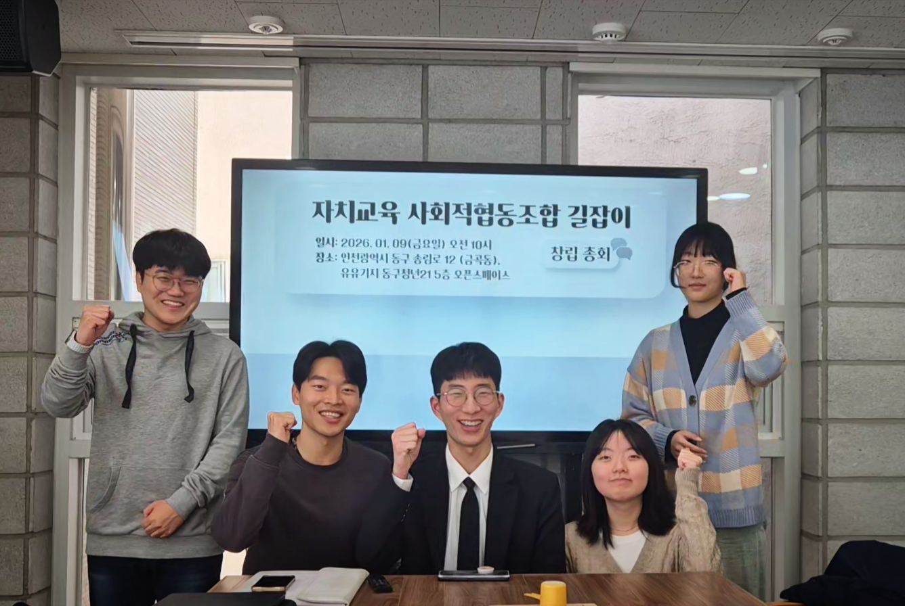

자치교육사회적협동조합
길잡이의 시작

은하수학교에서 시작한 청소년 자치교육
길잡이의 출발점은 인천학생교육문화회관의 청소년 자치배움터인 은하수학교입니다. 이곳에서 청소년은 관심 있는 주제로 프로젝트를 제안하고, 동료들과 의논해 프로젝트와 배움터를 함께 운영했습니다. 그곳에서 자치를 경험한 청소년 중 일부는 이후 길잡이교사로 활동을 이어가며 다른 청소년의 배움과 자치를 도왔습니다.
2023년 길잡이교사들은 청소년의 활동을 어떻게 도울지 함께 고민하기 위해 길잡이학습공동체를 꾸렸습니다. 여러 회의 방식을 실험하고 독서 토론과 연수를 열며, 경험을 자료집으로 정리해 새로 참여하는 길잡이교사와 나눴습니다.
2024년 은하수학교와 다가치학교가 공동 주관한 전국 청소년 자치 주도 활동 컨퍼런스의 기획과 운영에 참여했습니다. 여러 지역의 청소년과 교육활동가를 만나며 한 배움터에서 쌓은 경험을 다른 학교와 지역에서도 이어갈 방법을 고민하기 시작했습니다.
길잡이 연혁
-
창립총회 개최
정관을 제정하고 자치교육사회적협동조합 길잡이의 출범을 준비했습니다.
-
설립인가
교육부에서 사회적협동조합 설립인가를 받았습니다.
-
설립등기
설립등기를 마쳐 자치교육사회적협동조합 길잡이가 법인으로 성립했습니다.
-
아름다운재단 청소년공익활동지원사업 「봄·바람」 최종 선정
청소년 자치 도서 출간 프로젝트 「청소년이 쓰는 자치의 언어」 사업이 선정됐습니다.
-
2026 청소년 정책예산학교 운영
인천광역시교육청과 함께 학생참여위원들이 교육정책과 예산을 제안하는 워크숍을 열었습니다.
-
사회연대경제 청년 일경험 시범사업 참여기업 선정
인천광역시사회적경제지원센터가 주관한 시범사업의 참여기업으로 선정됐습니다.
오늘의 길잡이
학교와 마을에서 청소년이 자신의 의견을 말하고, 함께 정한 일을 실행하고, 교육정책 논의에도 참여할 자리를 만듭니다.